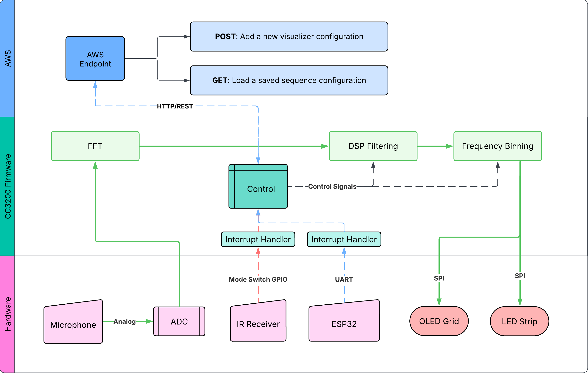

Prism is an embedded audio spectrum analyzer that captures live audio, processes frequencies using hardware-accelerated math (ARM CMSIS-DSP), and maps sound magnitudes to an Adafruit OLED display in real-time. It features cloud-connectivity via AWS to dynamically update visualizer configurations on the fly.
Our codebase is fully modularized. The FFT processing, DSP filtering (including custom noise gates and EMA gravity), and OLED SPI drawing routines are abstracted to allow easy configuration of bin counts, colors, and sample rates.
To recreate Prism, flash the provided firmware to a
CC3200 Launchpad. Connect the MAX9184 to ADC pin 60,
the OLED via standard SPI pins, and configure your
AWS IoT certificates in aws_config.h.
See the repository README.md for
schematic wiring.

Prism is tethered to an AWS IoT Core endpoint. By modifying the Device Shadow State, we can send POST requests to remotely configure the visualizer without reflashing the firmware.
Settings like num_bars,
gravity_shift, and frequency band
colors can be updated on the fly. The CC3200 polls
these endpoints via HTTP/REST to fetch the latest
desired state.
{
"state": {
"desired": {
"num_bars": "12",
"color1": "BLUE",
"color2": "GREEN",
"color3": "BLACK",
"gravity_shift": "12",
"sampling_rate": "4000"
}
}
}